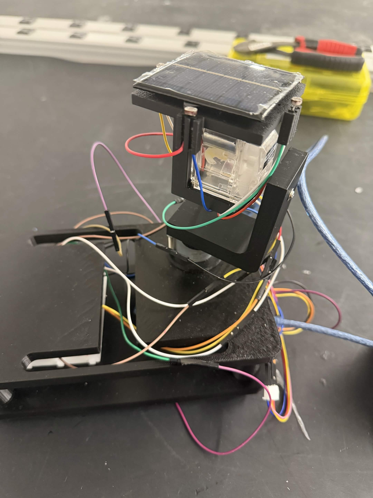
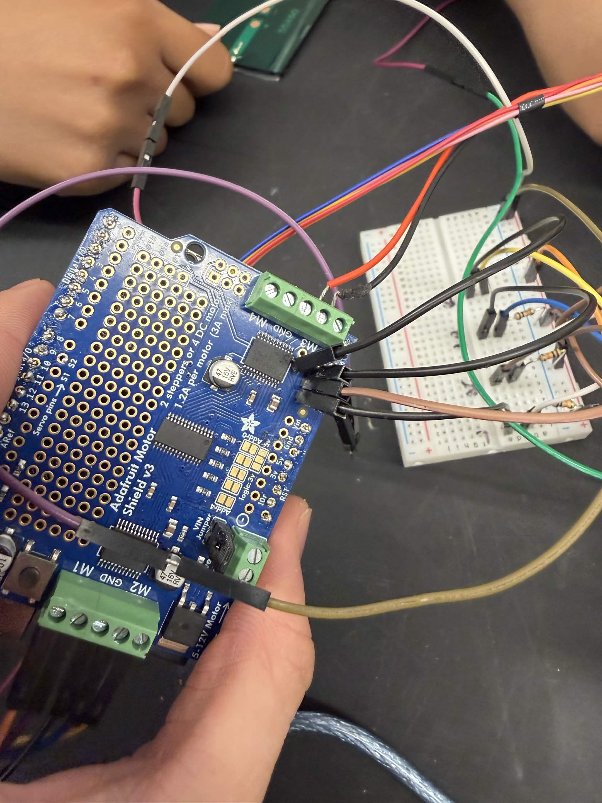
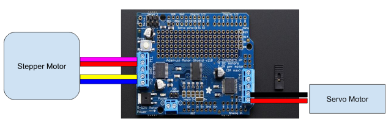

Goal - Design, manufacture, and test an autonomous dual-axis solar tracker capable of orienting a solar panel toward a simulated light source across multiple azimuth and altitude angles.
Project Type - Mechanical Engineering Design Project
Focus - Mechanical design, electromechanical systems, embedded control, sensor feedback, CAD, and 3D printing.
This project involved designing and building a dual-axis solar tracking system that automatically adjusts the orientation of a solar panel toward the direction of maximum light intensity. The system uses four photoresistors to determine the direction of the light source and two motors to independently control horizontal and vertical movement.
The mechanical system was designed in SolidWorks and fabricated using PLA 3D printing. The project went through multiple design iterations to improve component fit, manufacturability, wiring clearance, sensor placement, and rotational movement.
The tracker was divided into three primary mechanical assemblies: the baseplate, stepper motor mount, and photovoltaic (PV) mount. The design prioritized simplicity, compactness, ease of assembly, and clean wire management.
The Arduino Uno serves as the central controller for the tracking system. Four photoresistors measure light intensity from different directions, while the motor shield controls the motors responsible for changing the panel's orientation.
Each photoresistor was paired with a 10 kΩ resistor to form a voltage divider. The sensor outputs were connected to Arduino analog inputs A0, A1, A2, and A4. The sensors were positioned as four directional inputs labeled Top, Bottom, Left, and Right.


The tracker uses closed-loop feedback to continuously compare the light intensity measured by opposing photoresistors. The difference between the Left and Right sensors determines horizontal movement, while the difference between the Top and Bottom sensors determines vertical movement.
The original control strategy used a hill-climbing approach with experimentally determined sensor calibration limits. Testing showed that the fixed calibration values could become inaccurate when the surrounding lighting conditions changed.
The revised system therefore replaced the static calibration approach with a five-second startup calibration routine. The Arduino measures the current ambient lighting conditions and establishes baseline values before beginning tracking.
The tracker underwent several mechanical and electrical revisions during development. Early testing identified issues with component tolerances, wiring interference, sensor placement, and unnecessary positional feedback hardware.
The completed system was tested using a 14 V light-source power supply. The tracker was evaluated at three azimuth angles and three altitude angles. Solar-panel output voltage and tracking accuracy were recorded for each combination.
| Azimuth (°) | Altitude (°) | Voltage (V) | Azimuth Error (°) | Altitude Error (°) |
|---|---|---|---|---|
| 45 | 15 | 2.532 | ~7.4 | 1 |
| 45 | 45 | 2.597 | ~7.0 | 0 |
| 45 | 75 | 2.590 | ~7.0 | 0 |
| 90 | 15 | 2.525 | ~7.5 | 1 |
| 90 | 45 | 2.592 | ~7.1 | 0 |
| 90 | 75 | 2.591 | ~7.1 | 0 |
| 135 | 15 | 2.541 | ~7.2 | 1 |
| 135 | 45 | 2.595 | ~7.0 | 0 |
| 135 | 75 | 2.593 | ~7.0 | 0 |
The measured solar-panel output remained relatively consistent across the tested positions, ranging from approximately 2.525 V to 2.597 V. The altitude axis demonstrated 0°–1° of tracking error across all test conditions.
The azimuth axis exhibited a persistent offset of approximately 7°. Because this error remained relatively consistent across different light-source positions, it suggests a systematic source rather than random sensor variation.
The altitude axis consistently achieved either 0° or 1° of error. This indicates that the sensor arrangement, motor control, and mechanical linkage were able to accurately respond to changes in the vertical direction of the light source.
Horizontal tracking consistently displayed an offset of approximately 7°. Several factors may have contributed to this error, including motor calibration, control-code offsets, and mechanical interference from wiring around the rotational axis.
The relatively large rotational radius of the upper assembly allowed wires connected to the photoresistors, motor, breadboard, and Arduino to become tensioned or interfere with rotation. This could restrict the available range of motion and prevent the panel from reaching the exact desired azimuth.
The completed dual-axis solar tracker successfully demonstrated autonomous light tracking across multiple azimuth and altitude positions. The combination of custom 3D-printed mechanical components, directional photoresistors, motor control, and Arduino-based feedback allowed the system to continuously adjust the solar panel toward the light source.
The project also demonstrated the importance of iterative engineering design. Multiple revisions to the mechanical structure, sensor mounting, wiring, tolerances, and control logic improved the overall functionality of the system. While the altitude axis achieved highly accurate tracking, the remaining azimuth offset highlighted opportunities for additional mechanical and control-system refinement.
← Return to Home